We you access to the application, it will connect with the database getting the geometries and attributes of incidents and resources:
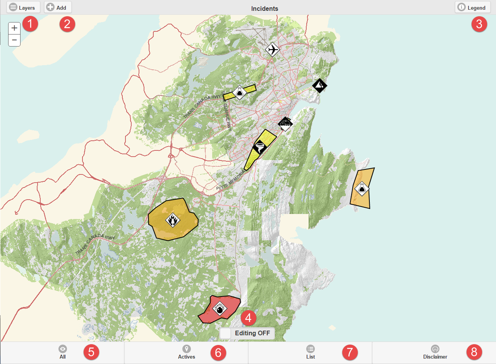
Manage layers button. You can change here the basemap or enable visualization for other layers.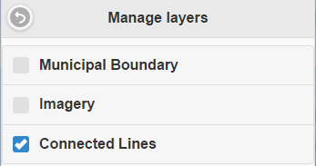 |
|
|
Add incidents or resources button. Just in Admin mode 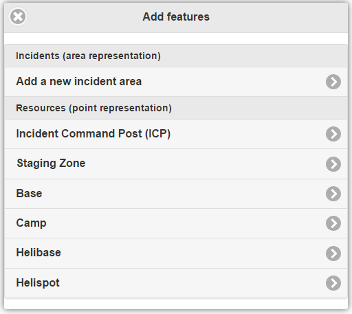 |
Legend. You can see colors and symbology for any type and level status. 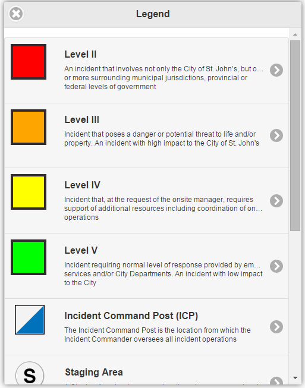 |
|
Editing button. If you want to modify attributes or geometries, you will need to enable the editing mode. |
|
See all Incidents. The application is able to show all of incidents on the map, independently if they already finish or not. 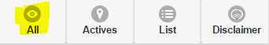 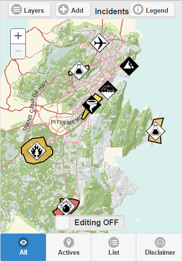 |
|
See only actives incidents. MASAS only shows those incidents with a null end date, so still actives. 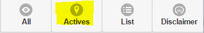 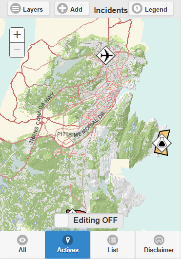 |
|
On list mode, you will see a list of incidents split in Actives and Inactives 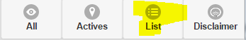 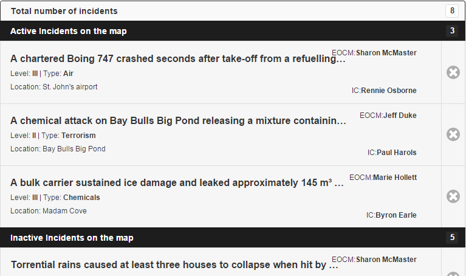 |
|
Disclaimer. It is a dialog showing the disclaimer information. Here you can find the button help too. 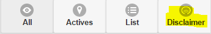 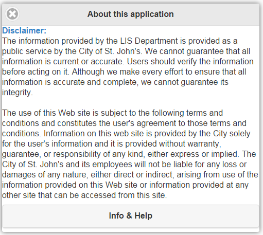 |